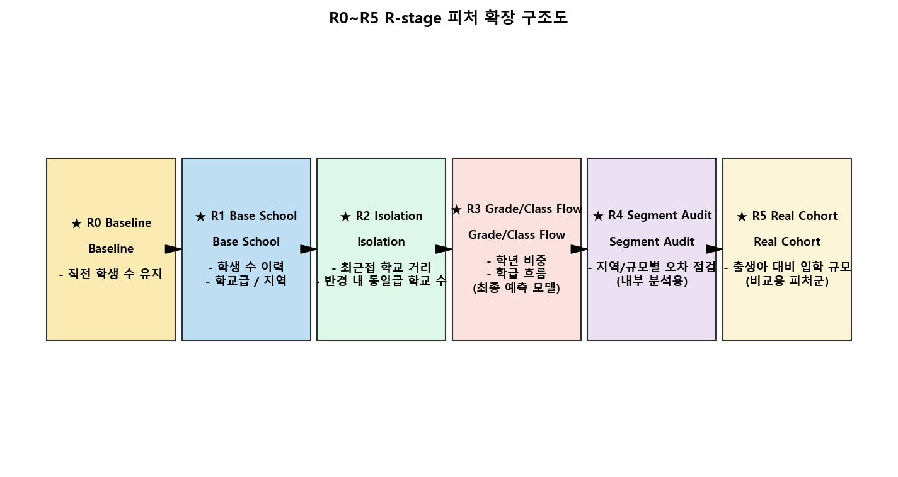
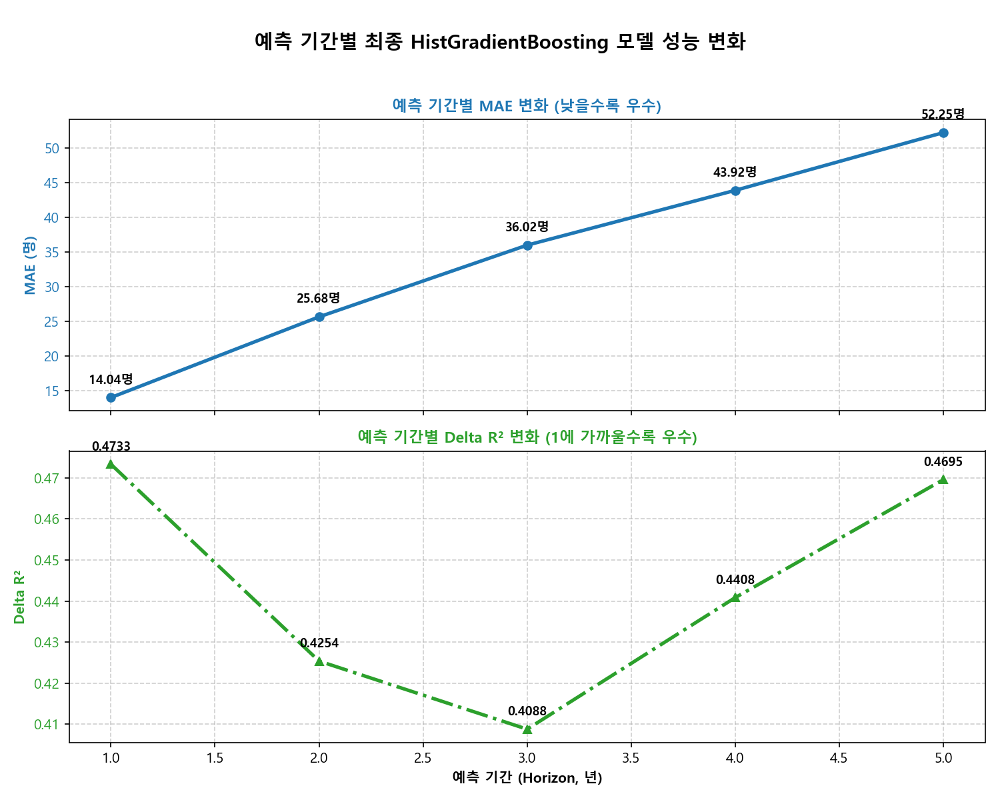
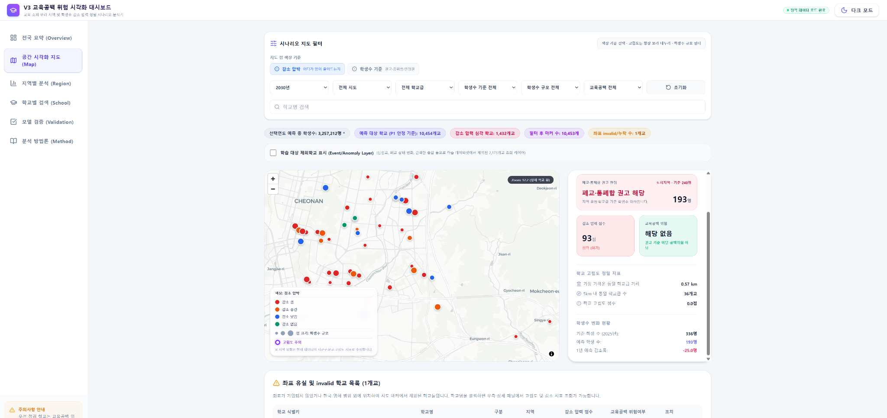

요 약
본 연구는 급격한 저출산으로 인한 학령인구 급감에 대응하여, 소규모 학교 통폐합 시 발생할 수 있는 교육 공백을 선제적으로 예방하기 위한 분석 체계를 제안한다. 기존의 소규모 학교 분류 예측 모델이 지닌 오차와 정책적 왜곡을 방지하기 위해, 본 연구는 학생 수 감소압력을 연속형 수치로 정의하고 문제를 회귀 분석으로 재구성하였다. 2012~2025년 전국 학교 및 시군구 인구 데이터를 통합한 다차원 패널 데이터를 활용하고, R-stage 피처 확장 설계를 적용하여 모델 성능을 개선하였다. 실험 결과, 1~5년 Multi-output HistGradientBoostingRegressor 튜닝 모델이 가장 안정적인 예측 추세를 나타냈다. 도출된 예측 시나리오와 구면거리 기반 공간 고립도 지표를 결합하여, 향후 교육서비스 단절 우려가 있는 학교를 식별하고 행정적 검토의 우선순위 지도를 시각화하는 보조 대시보드를 구축하였다.
1. 서 론
대한민국은 저출산 기조 장기화로 인해 급격한 학령인구 감소에 직면하고 있다. 비수도권 농산어촌뿐 아니라 도시 지역에서도 저학생수 학교가 급증하며 교육 인프라의 붕괴 우려가 커지고 있다. 그러나 기존의 일률적인 정량 기준 중심 검토는 지리적 고립도나 대체 교육 시설 부족 등 지역별 공간 맥락을 충분히 반영하지 못하는 한계가 있었다.
본 연구는 특정 학교의 운영 종료 여부를 직접 분류 예측하는 분류 모델 대신, 연속형 지표인 '학생 수 감소압력'을 다년도 회귀 모델로 예측하고 이를 공간적 고립 지표와 결합하는 분석 방안을 제안한다. 본 연구의 주요 기여는 다음과 같다.
- 전국 학교 정보 및 인구 통계를 통합한 다차원 패널 데이터셋 구축
- R-stage 피처 그룹 구성을 통한 기계학습 모델의 예측 성능 개선 요인 규명
- 예측 시나리오와 공간 고립도를 융합하여 행정 보조용 의사결정 대시보드 구현
2. 감소압력 예측 모델 설계
가. 데이터 수집 및 전처리
학교알리미의 기본 정보 및 학년별 학생 수 데이터와 KOSIS 통계청 인구 지표, 그리고 위·경도 좌표 데이터를 연계하여 2012~2025년 학교·지역 패널 데이터를 구축하였다. 신설 및 이전, 통합 등 이벤트성 학생 수 변동이 큰 2,173개교를 안정적인 회귀 예측 흐름 분석을 위해 이벤트군으로 분리하였으며, 이를 제외한 대상 학교들을 중심으로 다년도 기계학습 알고리즘 예측 모델을 설계하였다.
나. R-stage 피처 확장 구조
예측 모델 성능 향상을 위해 R0(Baseline)에서 R5(실제 코호트 연계)까지의 점진적 피처 확장 구조를 설계하였다 (그림 1). R1은 기본 속성 및 학생수 시퀀스, R2는 구면 최단 거리 및 반경 내 동일급 학교 분포 등 공간 속성이다. R3는 학년별 유입·유출 흐름을 포착하는 학년별 학생 비중 및 학급 변동성 지표이며, R4는 예측 성능 모니터링용 그룹, R5는 7년 전 지역 출생아 수 통계이다.

다. 최종 모델 선정 및 파라미터
다양한 회귀 알고리즘 실험 결과, R3 피처셋 기반의 `R3 기반 1~5년 Multi-output HistGradientBoostingRegressor 튜닝 모델`이 최종 선정되었다. 학습 시 오차 최소화와 과적합 억제를 위해 파라미터는 max_iter=120, max_leaf_nodes=31, learning_rate=0.04, l2_regularization=0.1로 튜닝 및 최적화하여 적용하였다.
3. 실험 결과 및 시나리오 전망
가. 모델 예측 성능 결과
최종 튜닝 모델의 성능 검증 결과, 1년 예측 MAE는 14.038명 수준으로 억제되었으며, 5년 예측 Horizon에서도 MAE 52.248명, Delta R² 0.4695를 기록하여 강건한 추세 예측력을 확보하였다 (그림 2). 특히 저학생수 학교군에 한정한 5년 평균 MAE는 9.244명으로 오차가 조밀하게 통제되어 장기적인 학생 수 예측의 신뢰성을 입증하였다.

나. 미래 시나리오 전망
2025년을 Baseline으로 2030년까지 시나리오를 예측한 결과, 대상 학교의 총 학생 수는 2025년 3,837,653명에서 2030년 3,299,224.39명으로 감소하여 누적 감소율 -14.03%를 기록할 전망이다. 2030년 최종 시점 기준 학생 수 감소압력이 관측되는 학교는 5,425개교로 집계되었으며, 반경 5km 내 대체 학교가 없어 공간적 고립도가 높은 저학생수 학교는 1,462개교, 감소압력과 공간 고립도가 교차하는 교육공백 우려 학교는 1,848개교로 도출되었다.
4. 웹 대시보드 구현 및 활용
웹 대시보드는 전국 요약, 학교 단위 지도, 지역 분석 화면으로 구성하였다. 논문에서는 이 중 개별 학교의 위치와 감소압력, 고립도, 우선점검 참고 여부를 동시에 확인할 수 있는 학교 단위 지도 화면을 대표 화면으로 제시한다. 지도 화면은 연도·지역·학교급 필터와 학교별 마커를 제공하며, 특정 학교를 선택하면 예측 학생 수, 감소율, 최근접 동일급 학교 거리, 반경 내 학교 수, 고립도 지표가 상세 패널에 표시된다.
또한 본 대시보드는 교육청 담당자가 연도별 학생 수 감소 추이를 확인한 뒤, 학교 단위 지도에서 공간적으로 고립된 학교를 우선 확인하는 흐름으로 활용될 수 있다. 예를 들어 특정 시도 또는 시군구를 선택하면 해당 지역의 감소압력 상위 학교를 먼저 확인하고, 이후 지도 마커를 선택하여 주변 동일급 학교 접근성, 최근접 학교 거리, 반경 내 학교 수를 함께 검토할 수 있다. 이를 통해 단순히 학생 수가 적은 학교를 나열하는 방식이 아니라, 교육 서비스 접근성이 함께 약화될 가능성이 있는 학교를 선별적으로 검토할 수 있다.
단, 웹에서 강조되는 학교는 행정적 결정 대상이 아니라, 학생 수 감소압력과 공간적 고립도를 함께 보여주는 우선점검 참고 대상이다.

5. 결 론
본 연구는 학령인구 감소 추세 하에서 전국 학교·지역 패널 데이터와 머신러닝 회귀 파이프라인을 구축하여 학교별 학생 수 감소압력 예측 엔진을 개발하였다. 제안된 HistGradientBoosting 모델은 다개년 예측 범위에서 안정적인 추세를 확보하였으며, 지리 공간적 고립 지표와의 연계를 통해 지역 소멸 대응용 교육공백 우려 신호 및 검토 우선순위를 식별하는 보조 지표로 기능함을 확인하였다.
본 시스템에서 제공하는 대시보드 화면과 우선점검 참고 정보는 의사결정을 돕는 보조 정보이며, 구체적인 규모 조정 등의 행정 검토는 교육청 고유의 절차와 주민 의견 수렴 등을 통해 판단해야 한다. 향후 연구에서는 정밀 학구 GIS 데이터 및 대중교통 접근 시간을 추가 연계하여 구면거리 기반 고립도 지수를 더욱 고도화할 계획이다.
본 연구의 한계는 실제 통학권과 생활권을 완전히 반영하지 못했다는 점이다. 현재 고립도 지표는 학교 간 직선거리와 반경 내 동일급 학교 수를 중심으로 계산되었으나, 실제 통학 가능성은 도로망, 대중교통 배차 간격, 통학 차량 노선, 산지·도서 지역의 지형 조건에 따라 달라질 수 있다. 따라서 향후 연구에서는 도로망 기반 이동 시간, 실제 학구 경계, 통학 버스 노선, 대중교통 접근성 데이터를 결합하여 교육공백 우려 지표를 더 정밀하게 개선할 필요가 있다.
실무 적용 시에는 본 모델의 결과를 단독 판단 기준으로 사용하기보다, 교육청의 지역별 기준, 학교 구성원의 의견, 학부모 및 지역사회 수용성, 통학 안전성 검토와 함께 해석해야 한다. 따라서 본 시스템은 행정 결정을 자동화하는 도구가 아니라, 사전 검토 대상을 좁히고 논의의 근거를 제공하는 보조 분석 도구로 활용되는 것이 적절하다.
감사의 글
이 연구는 [작성 필요] 교과목 프로젝트 수행 결과를 바탕으로 작성되었으며, 피드백을 반영하여 개선되었다.
참고문헌
- 통계청, KOSIS 국가통계포털.
- 한국교육학술정보원(KERIS), 학교알리미.
- 카카오, Kakao Developers Local API.
- Scikit-Learn Developers, scikit-learn User Guide.
- 교육부, 소규모학교 혁신을 통한 지역 교육력 제고 방안.